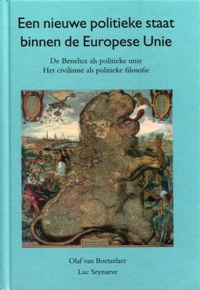

> nieuwsbrief >
2009 - nr 4
Inhoud
Zowel de
herdenkingsplechtigheid aan het Bourgoensche Cruyse (in de voormiddag)
als de
jaarmis in de kapel van het Slot van Male (in de namiddag) zullen in
2010
doorgaan op zaterdag 22 mei 2010.
Het bezoek aan het dubbelgraf
van
Joris van Severen en Jan Rijckoort te Abbeville is gepland op zondag
23 mei.
In 2010 zal het precies 70 jaar geleden zijn dat het drama van
Abbeville zich
afspeelde.
Oproep
Graag had ik alle mogelijke documentatie i.v.m. Cecilia de Langhe (1912-2001) ontvangen, gehuwd met Odon Spitaels; dat met het oog op een biografisch artikel over haar. Geboren in Gits en overleden in Vlezenbeek. Woonde lange tijd in Belgisch-Congo en was een tijdlang voorzitster van de Verdinaso-Vrouwen (Verdivro). Alle hulp is welkom .
Pieter
"Joris
van Severen: een biografisch portret"
Bij de
Nederlandse uitgeverij Aspekt verschijnt rond de jaarwisseling een
biografie
van Joris van Severen van de hand van onze medewerker Pieter Jan
Verstraete.
Via onze volgende Nieuwsbrief krijgen
onze leden de mogelijkheid aangeboden om deze uitgave bovenop ons
jaarboek te
bestellen voor een gunstprijs die aanzienlijk beneden de
boekhandelprijs ligt.
14e Historische
beurs Vlaamse Beweging 18 oktober
(9-16 uur), zaal Nilania, Kesselsestw. 52; 2560 Nijlen.
Ons
Studiecentrum zal aldaar dit keer verstek moeten geven. We raden een
bezoek aan
de beurs niettemin van harte aan!

Een nieuwe
politieke staat binnen de Europese Unie
De
Benelux als politieke unie - Het civilisme
als politieke filosofie
Dit boek is opgebouwd vanuit twee grote politieke
invalshoeken. In de
eerste plaats de ontwikkeling van de politieke filosofie van het
civilisme, een
nieuw uitgevonden begrip, een zogenaamd neologisme, afgeleid van
civilisatie.
Heel kort door de bocht gesteld: de kerngedachte is dat iedere mens de
roeping
heeft een bijdrage te leveren aan onze civilisatie, materieel dan wel
immaterieel.
Als uitgewerkte basis voor deze politieke filosofie
dienen een tiental
stellingen, door
Vervolgens worden in het boek, op basis van deze
uitgangspunten op
diverse beleidsterreinen ook beleidsvoorstellen ontwikkeld. Het voert
te ver
hier de tien uitgangspunten integraal te poneren. Volstaan moet worden
met de
vaststelling, dat deze tot onderwerp hebben onder meer, de burger, als
drager
niet enkel van rechten maar ook van plichten, ten opzichte van de
diverse
kringen in de samenleving, de structuur van de staat volgens de
beginselen van
gespreide verantwoordelijkheid oftewel de subsidiariteit, de
gezagsuitoefening
binnen de samenleving en de bevordering van een meritocratie hetgeen
wil zeggen
dat het gezag door de terzake bekwaamsten wordt uitgeoefend.
Zeker ook houden deze uitgangspunten zich bezig met het
normatieve in de
samenleving, dus de waarden en als tiende uitgangspunt last but
not least
wordt aandacht gevraagd voor het milieu. In zijn aanloop naar de
formulering
van de tien uitgangspunten bepleit
Zoals gezegd, de auteur daalt in zijn boek af van het
rijk van de hogere
principes naar het beleidsniveau en komt hier met concrete voorstellen
voor de
te voeren politiek. Dit gebeurt onder meer met betrekking tot de
criminaliteit,
zowel in preventieve als repressieve zin. Een brandend maatschappelijk
probleem
dat zowel in kwalitatieve zin dus in ernst als in kwantitatieve zin
dus
in omvang finaal uit de klauwen is gelopen. De ontwikkelde visie
benadrukt
zowel het belang van opvoeding en vorming als preventie te dezen als de
generaal preventieve werking van een afdoende sanctionering. In beide
opzichten
schiet men thans kennelijk te kort!
Het grote belang van onderwijs en het leveren van
maatschappelijk
relevante prestaties wordt beklemtoond vanuit de gedachte van de drie
Ks:
Kunnen (capaciteiten), Kennen (know-how) en Karakter (integriteit en
gemotiveerdheid). Ook wordt de strijd aangebonden met het verwerpelijke
pesten op school!
Ten aanzien van het immigratievraagstuk wordt een
eresaluut gebracht aan
de emigranten die het hebben weten te bolwerken en tevens wordt
aangetoond hoe
onverantwoordelijk want maatschappelijk nefast het zo liberale
instroombeleid van de afgelopen decennia heeft uitgewerkt. Van regeren
is
vooruitzien, gourverner cest prévoir, gesproken!
Vernieuwende voorstellen worden ook gedaan met betrekking
tot de
hervorming van ons politiek stelsel, om onze democratie beter te doen
werken.
Naast de representatieve democratie worden ook meer
vormen van directe
democratie geïntroduceerd directe verkiezing gezagdragers, referenda
teneinde de particratie terug te dringen ten gunste van de
meritocratie. Ten aanzien van het
sociaaleconomische beleid worden ideeën uitgewerkt onder andere voor de
radicale terugdringing van de belasting op arbeid en de introductie van
een
leefloon.
Ook de prangende internationale milieu problematiek
krijgt ten volle de
aan-dacht die ze verdient. Een enkel citaat: zeeën mogen geen natte
woestijnen
worden! Een andere uitspraak: Dieren, voor zover van ons afhankelijk,
moeten
wij in staat stellen hun dier zijn, krachtens hun natuur te beleven.
Dat
verdraagt zich dus niet met de omstandigheden waaronder dieren in de
bio-industrie veelal moeten leven. Geen levend wezen mag enkel bezien
worden
uit het oogpunt van winstmaximalisatie. Dat is een evolutie van
innerlijke
beschaving. Het zijn maar enkele voorbeelden.
Politiek-filosofisch wijzen de auteurs op de sterke
verwantschap tussen
de Christen-Democratie en hun civilistische ideeën. Het realiseren van
deze
laatste kan logischerwijze het best gebeuren binnen een juiste
Christen-Democratie.
In de eerste richtlijn wordt onder andere ook gepleit
voor het
expliciet maken en actualiseren van de maatschappelijke waarden en
normen,
welke in het evangelie besloten liggen. Zelfs voor niet-christenen in
elk geval
toch een gezaghebbende bron van onze beschaving.
Zoals in het begin gezegd: naast de
maatschappij-filosofische invalshoek
van het civilisme, is er nog een ander thema in het boek. Dat betreft
de
voorgestane revitalisering van de Benelux tot een ever closer Union
met als
einddoel een (con)federaal staatsmodel, omvattende de huidige drie
landen. En
dit, vanwege de verwachtbare meerwaarde hiervan op tal van terreinen.
Zodoende
wordt ook een wenkend perspectief geopend om uit de verlammende
existentiële
Belgische staatscrisis te geraken en een uitweg gevonden uit de
permanente en
destructieve communautaire polarisatie binnen België. Niet voor niets
hebben in
dit boek de Nederlander
Immers het voorwoord en het slot zijn van de Vlaming uit
Izegem Luc
Synaeve en het tussenliggend gedeelte van de afwisselend in Brugge en
Den Haag
wonende Olaf van Boetzelaer. We beleven thans een opstoot van Vlaams
nationalisme.
De gerechtvaardigde aspiraties van de Vlamingen naar meer autonomie
kunnen heel
wel hun verwezenlijking vinden in een Benelux-staat, die ook veel
meer
gewicht binnen de Europese Unie zal hebben dan het kleine Vlaanderen
afzonderlijk. Vlaams-nationalisten zouden in plaats van zich te
focussen op
Kleinstaterei eens de denkpiste kunnen gaan bewandelen van zich te
situeren
binnen een verruimingsoperatie: the magic of thinking big, met
Brussel als de
(tweetalige) hoofdstad van de Benelux-staat, de herrezen Nederlanden.
Dat biedt ook voor de Franstalige Belgen aanlokkelijke
perspectieven,
beter dan een ondergeschoven kind van Frankrijk te worden! Met het
bovenstaande
hopen de auteurs aannemelijk te hebben gemaakt dat dit boek een meer
dan
zinvolle bijdrage kan leveren aan het politieke discours.
_______________
N.a.v. Een
nieuwe politieke staat binnen de Europese Unie, Uitgeverij
Groeninghe, ISBN 978-9077723-83-8.
Prijs (verzendkosten inbegrepen) 15 , via overschrijving op rekening
465-0226721-64 t.n.v. Stichting Joris van Severen, Meensesteenweg 191,
8870
Izegem.
Hugo Schiltz over Joris van Severen en
het Verdinaso
Eind mei verscheen Hugos heilige
vuur (Meulenhoff /Man-teau, 2009, 509 blz, 39,95 euro), het eerste
deel van
de biografie van Hugo Schiltz (1927-2006), Vlaams-nationaal politicus
en één
van de belangrijkste figuren uit de naoorlogse politieke ge-schiedenis
van
België. Het lijvi-ge werk gaat dieper in op de jonge jaren van de
Antwerpe-naar.
Het bestrijkt de periode tussen zijn geboorte in 1927 en zijn eerste
stappen in
de politiek in 1954 (toen nog bij de CVP; Schiltz stapte pas halverwege
jaren
60 naar de Volksunie over).
Biograaf Paul Huybrechts baseert zich voor zijn boek in
belangrijke mate
op de uitgebreide dagboeknotities die Schiltz naliet. Ook het vele
poëziewerk
dat de jonge flamingant publiceerde behoort tot het door de auteur
gebruikte
materiaal. Aangezien Schiltz zelf uit een overtuigd-flamingantische
familie van
de klassieke katholieke kleinburgerij stamde, staan de dagboeken vol
met
verwijzingen naar figuren uit de Vlaamse Beweging. Ook het Verdinaso en
Joris
van Severen komen aan bod. Daaruit blijkt dat Schiltz, die nochtans
altijd een
duidelijke Dietse reflex heeft gehad, niet hoog opliep met de
beweging en haar
leider. Niettemin was hij een tijdlang medewerker van het
neo-Dinaso-blad Vive le Gueux.
Hugo Schiltz, die zelf als lid van de NSJV
(Nationaal-socialistische
Jeugd Vlaanderen) in 1944 kortstondig in hechtenis werd genomen
worstelt
jarenlang met de houding die hij moet innemen ten opzichte van de
autoritaire
stromingen binnen de Vlaamse en Groot- en Heel-Nederlandse Beweging.
Ook de rol
van collaboratie en verzet doet de jongeman, die na
Het siert de niet-historicus Paul Huybrechts (de man is
vooral in
financiële kringen actief, is een oud 68er en ex-journalist van De Morgen en De Financieel-Economisch Tijd)
dat hij doorheen de biografie alles
in zijn tijdskader plaatst. Zo laat hij bijvoorbeeld niet na te
benadrukken dat
er in de periode kort na WO.II amper aandacht was voor de
jodenvervolging door
het naziregime. Ook stelde hij naar aanleiding van het verschijnen van
de
biografie in een interview: wat zou er van u geworden zijn als u in
Dinaso steekt
weer het hoofd op,
steenezels
Het is hier uiteraard niet de bedoeling om de
Schiltz-biografie hier
uitvoerig te bespreken maar het loont wel de moeite om dieper in te
gaan op wat
de man denkt over het Verdinaso en Joris van Severen. In zijn jonge
jaren werd
ten huize Schiltz uiteraard vaak over politiek gepraat. De familie had
duidelijke VNV-sympathieën maar er werd eveneens over de rol van de
Fronters,
minimalisten en Dinasos gediscussieerd. Politiek en wereldproblemen
waren
dagelijkse kost, zo stelt Huybrechts. In 1992 denkt Schiltz in zijn
tijdschrift Vlaanderen Morgen nog
eens terug aan die periode en heeft hij het over zijn familie: Al
waren zij
allemaal echt Vlaamsgezind, de helft hield het bij de katholieken, en
de andere
helft bij de Vlaams-nationalisten, behalve één enkele die met kepi en
botten
rondliep voor Joris van Severen.
Schiltz was als jonge flamingant doordrongen van de
Vlaams-romantische
mystiek rond figuren als Dosfel, Tollenaere, Borms en in mindere mate
Verschaeve. Na de oorlog waren repressieslachtoffers als Romsée helden.
Van
Severen behoort niet tot het pantheon van de familie Schiltz. "Het
heilige
vuur van Van Severen heeft Hugo thuis niet meegekregen," stelt
Huybrechts
(blz 307). De auteur gaat overigens even kort door de bocht door te
stellen dat
Joris van Severen met zijn Verdinaso een onversneden fascist wordt.
Historisch onderzoek heeft aangetoond dat de waarheid op zijn minst
genuanceerder is.
De jonge Schiltz is niet gefascineerd door Van Severen
maar de
denkbeelden van de Verdinaso-leider werken niettemin door in de
geschriften van
de politicus in spe. In een manuscript uit 1946 heeft hij het over de
nood om
een Nederlandse gentleman te zijn. Hij ziet de Walen niet als
Nederlanders
maar het valt niet te ontkennen dat de eeuwenlange samenleving van
Nederlanders en Walen (waarbij vroeger de eersten de toon aangaven) een
gemeenschappelijke economie en handelsbelangen een zeker
samenhorigheidsgevoel
verwekt hebben, hoe wankel en betwistbaar ook. Verder stelt hij over
de Walen:
Als ze nog een greintje nuchter verstand bezitten, zullen zijn
wellicht als
bondsstaat een toevlucht vinden in het Nederlandse Rijk.
Net als vele jonge Vlaams-nationalisten is Schiltz kort
na WO.II een
zoekende en vraagt hij zich af of de toekomst in Vlaanderen, België,
Groot- of
Heel-Nederland ligt, in een democratie of in een autoritair regime.
Wij
aanvaarden België, maar leggen er ons niet bij neer stelt hij in
Maar Van Severen kan Schiltz dus niet bekoren en hij
begrijpt niet dat
vrienden naar de Leider teruggrijpen: Dinaso steekt weer het hoofd
op,
steenezels, iedereen meent dat zijn oplossing de enige mogelijke is.
Er wordt
veel gepraat en gebulderd, maar daden?
(04-03-1946).
Anderzijds is hij vol lof wanneer het tijdschrift Branding verschijnt en als antwoord op de stuurloosheid
van vele
jongere Vlamingen put uit het gedachtengoed van Van Severen. Drijvende
kracht
achter het blad is de latere CVP-minister Frans van Mechelen. Branding is net verschenen. Een moedig
opzet. Zal het slagen? Vlaanderen dreigt zich zo te verbrokkelen, dat
men soms
zou wanhopen. En toch? Wij bezitten nog een jeugd die iets durft en
iets doet
(05-03-1947).
Het noodlottig
pretorianendom
In november 1947 komt rechtenstudent Schiltz in contact
met Vive le Gueux. Het blad werd dat
voorjaar opgericht door Rudolf Westerduyn (Rudolf van Moerkerke), Manu
Ruys,
Staf Vermeire en Karel Vanderhaeghen (Jan Olsen). In Vive
le Gueux van februari 1949 schrijft Schiltz volgens Huybrechts
één van zijn belangrijkste bijdragen als jong flamingant. Het gaat om
het
artikel Van contrast naar contact
waarin hij onder het pseudoniem P. Verhulst zich vragen stelt bij de
rol van de
Vlaamse leiders tijdens WO.II. Volgens Huybrechts werkte Schiltz bijna
twee
jaar aan de tekst. Wij citeren biograaf Huybrechts hier uitgebreid:
Met het
artikel Van contrast naar contact
breekt Hugo uit zijn eigen gevangenis. Hij loopt niet over naar het
democratische kamp, maar bezint zich over de tegenstelling tussen wit
en zwart,
tussen fascisme en democratie. Hugos politieke paradigma verschuift.
Als
overwonnene bekent hij dat zijn politieke kompanen zich tijdens de
oorlog in
een noodlottig pretorianendom van het volk verwijderd hebben, dat de
kruistocht
tegen het bolsjewisme smadelijk geprostitueerd werd, dat zij blind zich
en
naïef in de arm van een trouweloze vriend hebben geworpen.
Het is paradoxaal dat Schiltz deze voor hemzelf
existentieel belangrijke
bijdrage schrijft in een tijdschrift waar hij al snel afstand van zal
nemen.
Schiltz heeft het in 1948 lastig met een speciaal Vive le
Gueux-nummer dat aan van Severen is gewijd.
Volgende passage in zijn dagboek verwijst daarnaar: Het
laatste nummer
van Vive le Gueux is aan Joris van
Severen toegewijd. Dat voordurend op één lijn stellen van Artevelde, de
Zwijger
en Van Severen stuit mij wat tegen de borst. Maar waar komt die
hardnekkigheid
vandaan, waarmee de getrouwen aan hun idool vasthouden. (19.05.1948).
Maar een dag later schrijft hij dan weer :Mis voor Joris
van Severen en
voor allen die stierven als strijdende Vlamingen. Om 7u. Ongeveer 40
man
aanwezig. Noem ik een succes. Gezien de studentenluiheid.
Schiltz vindt blijkbaar dat de aanhangers van Joris van
Severen weinig
realiteitszin hebben. Vormt zich hier al de pragmatische, nuchtere
realpolitiker? Als universiteitsstudent die contacten houdt met zijn
vroegere
school, het Xaveriuscollege in Borgerhout, schrijft hij in de herfst
van 1948:
Twee mannen van poësis zijn hier geweest om raad te vragen over de
methode in
de klas te volgen. (
) Een ervan komt uit een Dinasofamilie. (
) Even
gefascineerd door de figuur van Joris van Severen, even abstract en ver
van de
concrete Nederlandse werkelijkheid.
Wel ergert Schiltz zich op een bepaald moment aan het
gebruik van de
icoon Joris van Severen in de verkiezingscampagnes, zoals door de
Vlaamse
Concentratie in 1949: "Men liet de schim van Van Severen beter rusten,
in
plaats van ze te verkwanselen in een verkiezingscampagne." Hij noemt de
naam van onder andere Paul Persyn (lid van de Verdinasoleiding die na
de
opslorping van de beweging in het VNV in het verzet terechtkwam) als
één van de
vele figuren die actief in CVP of Vlaamse Concentratie de naam Van
Severen of
hun voormalig lidmaatschap van de beweging gebruiken.
In 1950 refereert Schiltz in een toespraak voor Waalse
studenten nog
eens naar Van Severen, maar dan heeft hij het niet over de
Verdinaso-leider,
wel over de frontsoldaat uit WO.I: De Vlamingen worden vernederd en
wanneer de
Frontbeweging protesteert, worden de voormannen zoals Joris van
Severen -
gedegradeerd of verbannen naar strafkampen.
Uit de biografie blijkt dat Hugo Schiltz zich nooit echt
aangetrokken
gevoeld heeft tot Joris van Severen. Enerzijds omdat er in zijn
Vlaams-nationale opvoeding nooit veel aandacht is geweest voor het
personage,
anderzijds omdat de jonge Schiltz langzaam maar zeker afscheid neemt
van wat in
zijn ogen iconen uit het verleden zijn.
Dertiende jaarboek Joris van Severen - Van Oranje tot Servaes
Brederode
Zoals in de vorige twaalf jaarboeken, gewijd aan Joris van Severen, met als ondertitel: Zijn persoon, zijn gedachten, zijn invloed, zijn werk, biedt het onlangs verschenen dertiende deel weer een veelzijdig en diepgaand beeld van de leider van het Verdinaso. Bij de negen bijdragen treffen we ook nieuwe en weinig bekende feiten en figuren in verband met het Verdinaso aan. Zo was de beroemde expressionistische kunstschilder Albert Servaes, lid van het Verdinaso, maar evolueerde hij nadien naar de collaboratie, evenals zijn zoon Jan.
Een direct en
tijdsgebonden
document, is het vervolg van Van Severens oorlogsdagboek, Die
vervloekte oorlog, dat in Jaarboek 9 (2005) verscheen en de
periode 13 november - 31 december 1918 behelst. Het is verbazend hoe
hij, na de
doorstane oorlogsellende, de actualiteit op de voet volgt.
Eindredacteur
Maurits Cailliau wil ook in de volgende jaarboeken nog integrale
stukken uit
Van Severens dagboeken publiceren! De intens katholieke, radicale
flamingant en
jeugdig enthousiaste Joris voelt de nieuwe tijdgeest aan en schrijft op
16
november
Dichter bij onze ontvoogdingsstrijd leidt ons de Gentse germanist Daniël Vanacker, in de studie van het Vlaamse en Groot-Nederlandse nationalisme een vaste waarde met zijn bekroonde studie Het aktivistisch avontuur, het standaardwerk De Frontbeweging en Van Severens oorlogsdagboek Die vervloekte oorlog (2005), uitgave van het Studiecentrum Joris van Severen, dat ook dit Jaarboek 13 uitgeeft. Vanacker brengt een tweede, welgekomen, zij het lange, bijdrage over Karel de Schaepdrijver, één van de vier sublieme deserteurs van de Frontbeweging aan de IJzer, die naar de activisten in het binnenland overliepen. Uit deze bijdrage blijkt hoezeer Van Severen begaan was met het lot van de Vlaamse ballingen in het Noorden. Hij, zelf actief in de Frontbeweging, bleef trouw aan deze mensen. Zijn kameraadschap met De Schaepdrijver werd nog verdiept en die ging ook meewerker aan Van Severens cultureel-literaire tijdschrift Ter Waarheid (1920-2I).
In een beknopte bijdrage maakt Ruud Bruijns, Noord-Nederlandse medewerker aan de jaarboeken, duidelijk waarom het Verdinaso als beweging niet deelnam aar de grootse hulde aan Willem de Zwijger in 1933, naar aanleiding van de 400e verjaar dag van diens geboorte. Nochtans droegen Dinasos bij tot de uitstraling ervan! De plechtige eedformule van Cyriel Verschaeves tweede strofe van de Eed van trouw aan Vlaanderen kwam voor deze hulde tot stand: Wij heffen hart en handen / Voor t heil der Nederlanden / En zweren vast den eed / Tot doodsbeproefde trouwe, / Wilhelmus van Nassouwe / Met U te staan gereed!. Samensteller Maurits Cailliau brengt hier zelf een waardevolle en steeds actuele bijdrage: De Nederlanden extra muros in het perspectief van Joris van Severen en zijn beweging. Dit is voor historisch geïnteresseerde lezers een zeer interessant artikel dat zou moeten leiden tot een diepgaander onderzoek. Cailliaus synthese van Van Severens - zich steeds verruimende - geopolitieke inzichten is behartenswaardig: Die zijn niet uit de lucht komen vallen, maar hebben zich van dag tot dag ontwikkeld op basis van zijn groeiend historisch bewustzijn en op basis van de reaalpolitieke perspectieven van zijn tijd. De flamingant werd Gr